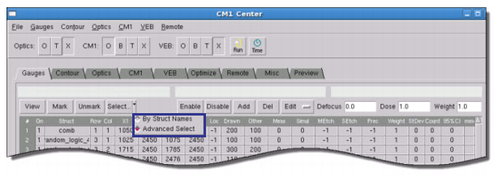
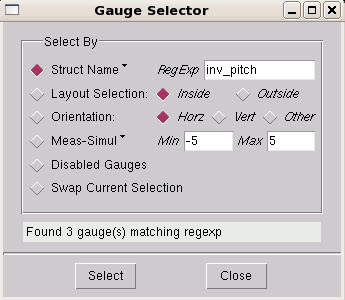

Because gauge
files can be very large, CM1 Center provides an advanced selector
dialog box to choose gauges based on different criteria.
Procedure
- In the
Calibre WORKbench main window, open CM1 Center ( menu
item). Switch to the Gauges tab.
- Load the gauge file or super
gauge data file using the options available from the Gauges menu.
- Click the arrow next to the
Select button. In the dropdown that appears (Figure 1), select the Advanced Select option.
Figure 1. CM1 Center, Activating
Advanced Select Mode
- Click the Select button.
The Gauge Selector dialog box appears (Figure 2):
Figure 2. Advanced Gauge Selector
Dialog Box
- Select one of the search types
to refine your gauge selection:
Struct Name —
Selects based on the structure name using the regular expression
you enter in the text field.
You can also click the arrow
dropdown next to the label to search on the contents of the Comment
field instead.
Layout Selection —
Selects gauges that lie either inside or outside the selection box
in the design window.
Orientation —
Selects gauges that are oriented in the specified direction. “Other”
selects gauges that cannot be classified as horizontal or vertical,
such as 2D shapes.
Meas-Simul —
Selects any gauges that have values that fall within the specified
range.
You can also click the arrow
button to the right of the label to change what spreadsheet column
or column comparisons are used as the selection criteria (such as the
StDev column or the absolute value of the difference between the
Meas and Sim columns).
Tip For definitions
on the columns, see the following sections:
Changing the selection column
changes the name of this label.
Disabled Gauges —
Selects all currently disabled gauges.
Swap Current
Selection — Selects any gauges that are not currently
selected. Currently selected gauges are unselected.
Tip To find
specific gauges more easily, you can also use the Edit button, Sort option. This option brings
up a dialog box that lets you sort by column or by one of the common column
comparisons (measured - simulated, absolute measured-simulated,
measured etch - simulated etch, and absolute measured etch - simulated etch).
- Click the Select button
to run the search.
Results
Any gauges matching the selection
criteria are selected in the Gauges tab.